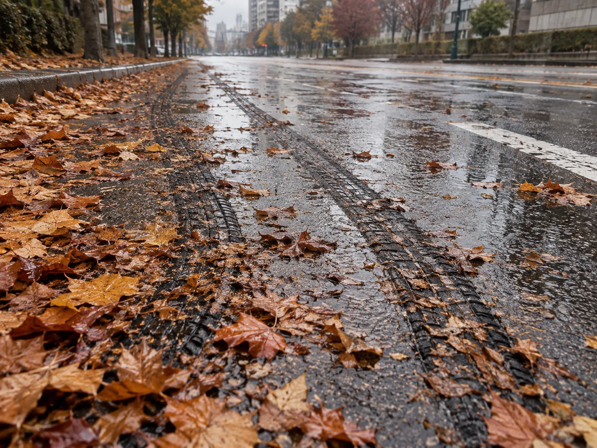
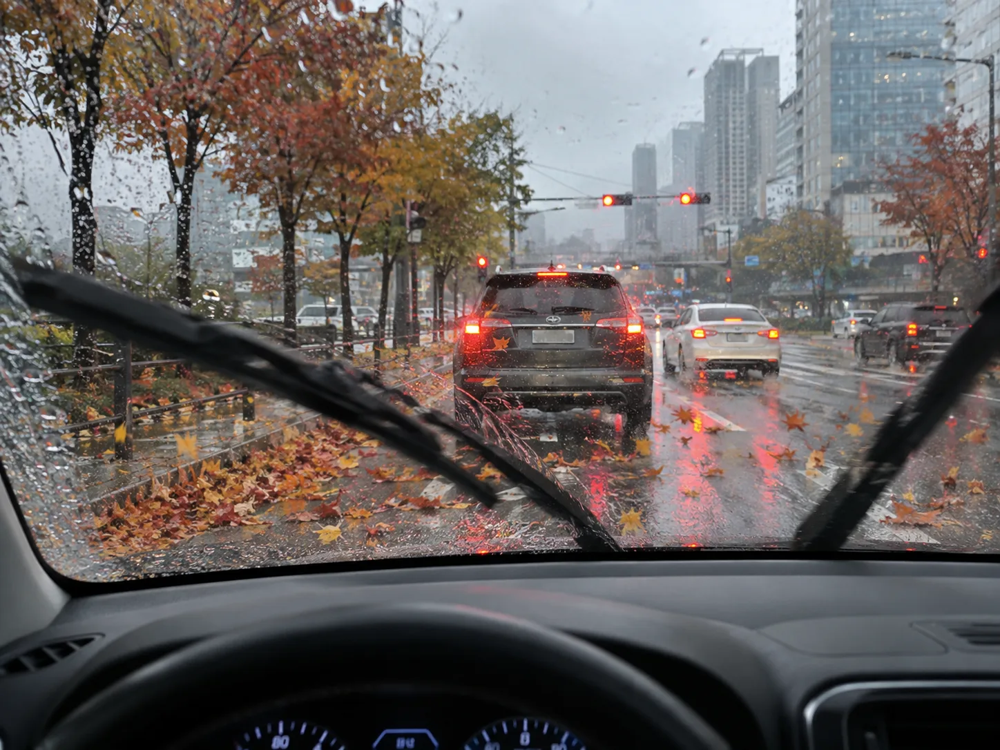
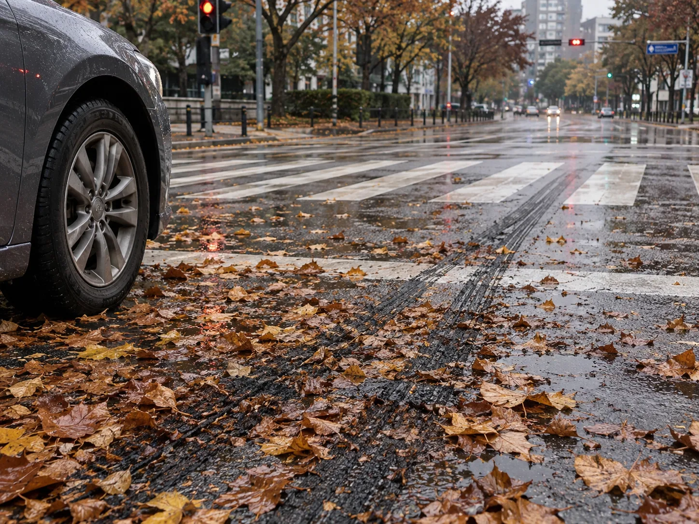
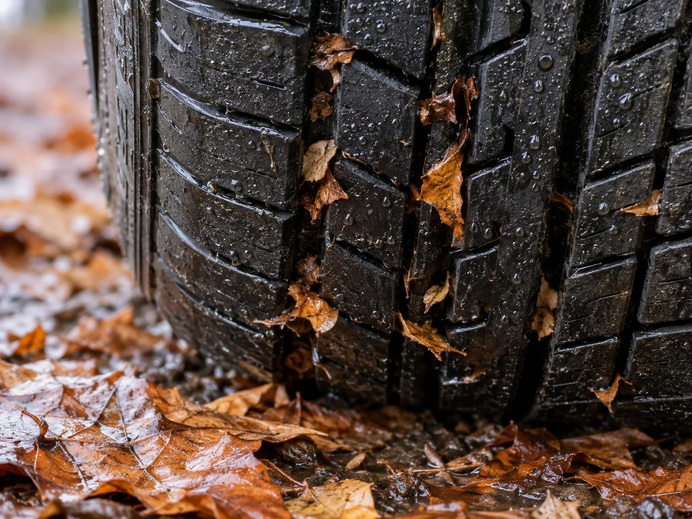

▲ 도심 도로에 쌓인 젖은 낙엽 위 타이어 자국(AI 생성 이미지) ⓒ CarPrism
비가 그친 다음 날, 젖지도 않은 것 같은 도로에서 갑자기 브레이크가 밀리는 경험을 한 운전자가 적지 않다. 원인은 하늘이 아니라 바닥에 있다. 가로수 길, 이면도로, 횡단보도 앞 정지선처럼 낙엽이 쌓이기 쉬운 자리에서는 비가 살짝만 스쳐도 노면이 순식간에 미끄러워진다. 카프리즘이 기존에 다룬 가을 산길 드라이브 기사가 굽이진 고갯길의 위험을 짚었다면, 이번엔 매일 오가는 출퇴근길·시내 주행에서 벌어지는 낙엽 위험을 짚는다.
1. 낙엽이 비를 만나면 왜 빙판처럼 미끄러워질까
▲ 젖은 낙엽 위에 남은 급제동 흔적(AI 생성 이미지). 마른 아스팔트와 달리 낙엽이 쌓인 구간은 타이어가 그립을 잃기 쉽다 ⓒ CarPrism
마른 아스팔트의 마찰계수는 보통 0.7~0.8 수준으로, 타이어 접지면이 노면 요철을 그대로 붙잡는다. 비가 내리면 이 값이 0.4~0.5로 떨어지는데, 여기에 낙엽이 얹히면 상황이 또 달라진다. 낙엽 표면의 왁스질 큐티클층이 물을 흡수하며 미끌미끌한 얇은 막을 만들고, 이 막이 타이어와 노면 사이에 끼어들면서 마찰력을 크게 깎아 먹는다. 전문가들은 이 상태를 종종 '아이스반(빙판)'에 비유한다. 실제로 미국 현지 방송 KWQC의 취재에 따르면 비에 젖은 낙엽이 쌓인 도로는 얼음판과 비슷한 수준으로 미끄러워지며, 제동거리가 마른 노면 대비 3배 이상 늘어날 수 있다고 보도했다.
수치로 감을 잡아보면, 한국교통안전공단이 화성 교통안전체험교육센터에서 진행한 제동거리 실험에서 시속 30km로 달리던 승용차는 마른 노면에서 1.5m 만에 멈췄지만 빙판길에서는 10.7m가 필요했다 — 약 7배 차이다. 속도를 시속 60km로 올리면 빙판길 제동거리는 마른 노면 대비 약 4.7배까지 늘어나는 것으로 나타났다. 젖은 낙엽 노면의 마찰계수가 빙판에 근접한다는 점을 감안하면, 평소라면 여유 있게 멈출 수 있던 거리에서 브레이크를 밟아도 차가 그대로 밀려나갈 수 있다는 뜻이다.
2. 산길보다 출퇴근길이 위험한 이유 — 낙엽이 쌓이는 자리를 보라

▲ 신호대기 중 운전석에서 바라본 도심 도로(AI 생성 이미지). 가로수 길·교차로 진입부에는 낙엽이 특히 두껍게 쌓인다 ⓒ CarPrism
산길 낙엽 사고는 급커브·내리막에서 조향력을 잃는 형태로 나타나지만, 도심 낙엽 위험은 성격이 다르다. 가로수가 늘어선 이면도로, 교차로 진입부, 버스정류장 앞, 그리고 무엇보다 횡단보도 정지선 부근에 낙엽이 바람에 쓸려 두껍게 쌓인다. 이 구간들은 공교롭게도 운전자가 급제동을 걸어야 하는 지점과 정확히 겹친다. 신호가 바뀌는 순간, 갑자기 나타난 보행자 앞에서, 앞차가 급정거할 때 — 평소라면 문제없이 멈췄을 거리에서 타이어가 낙엽 막을 타고 미끄러지는 상황이 생긴다.
또한 도심 주행은 정지·출발이 잦아 급제동 빈도 자체가 산길보다 높다. 낙엽이 젖은 상태로 방치되는 시간도 길다. 가로수 낙엽은 도로 청소 주기 전까지 며칠씩 쌓여 있는 경우가 많고, 그사이 비가 여러 차례 오가면 낙엽이 짓눌려 도로에 얇게 달라붙은 '낙엽 슬러지'가 형성된다. 이 상태가 오히려 갓 떨어진 낙엽보다 더 미끄럽다는 지적도 있다.
▲ 이른 아침 도심 가로수길에서 낙엽을 청소하는 도로 청소차(AI 생성 이미지). 간선도로는 지자체가, 이면도로 일부는 주민·상가 관리 구간으로 나뉘어 청소 주기에 차이가 생긴다 ⓒ CarPrism
도심 낙엽 청소는 도로 종류에 따라 관리 주체가 다르다. 간선도로·대로변은 각 지방자치단체(구청·시청) 도로과나 환경미화 부서가 정기 순찰과 청소차를 투입해 처리하지만, 이면도로·주택가 골목은 청소 주기가 상대적으로 길고 상가·주민 자율 청소에 맡겨지는 구간도 있다. 이 때문에 같은 동네에서도 대로변은 비교적 깨끗한 반면 골목길·주차장 진입로에는 낙엽이 며칠씩 쌓여 있는 경우가 흔하다. 낙엽이 특히 미끄러운 구간을 발견했다면 지자체 스마트폰 앱이나 안전신문고(안전신문고.go.kr)를 통해 신고하면 우선 청소 대상에 포함될 수 있다. 운전자 입장에서 당장 할 수 있는 대처법은 명확하다. 낙엽이 쌓인 구간에 진입하기 전 미리 속도를 줄여 관성 제동 거리를 확보하고, 급브레이크 대신 페달을 여러 번 나눠 밟아 타이어 잠김을 막는 것이다. ABS가 장착된 차량이라도 낙엽 노면에서는 제동 개입이 늦게 반응할 수 있으므로 가급적 직선 구간에서 서서히 감속하고, 곡선 구간이나 횡단보도 앞에서는 핸들 조작을 최소화하는 것이 미끄러짐을 줄이는 데 도움이 된다.
3. 횡단보도 앞에서 가장 위험한 이유

▲ 횡단보도 정지선 앞 급제동 흔적(AI 생성 이미지). 보행자가 있는 구간이라 위험도가 더 크다 ⓒ CarPrism
횡단보도 앞 정지선은 도로 구조상 낙엽이 잘 모이는 자리다. 신호등 기둥과 가로수 사이의 좁은 공간, 정차 차량들이 만드는 바람의 소용돌이 때문에 낙엽이 정지선 근처로 몰려든다. 문제는 이 구간이 보행자와 가장 가까운 지점이라는 점이다. 제동거리가 예상보다 길어지면 정지선을 넘어서는 것을 넘어 횡단보도 안까지 밀려 들어갈 위험이 생긴다.
도심 낙엽 구간 주행 팁
- 가로수 길·교차로 진입부는 평소보다 앞차와의 거리를 넉넉히 두고 진입한다.
- 횡단보도 앞에서는 낙엽이 젖어 있는지 눈으로 먼저 확인하고, 미리 감속해 정지선 훨씬 앞에서부터 브레이크를 나눠 밟는다.
- 비가 그친 직후 1~2일은 낙엽이 가장 미끄러운 시기라는 점을 기억한다.
4. 타이어 상태가 그립력을 더 갈라놓는다

▲ 낙엽 조각이 낀 타이어 트레드 클로즈업(AI 생성 이미지). 마모된 타이어는 낙엽·물을 배출하는 힘이 약하다 ⓒ CarPrism
같은 낙엽 노면이라도 타이어 상태에 따라 체감 위험도는 크게 갈린다. 타이어 트레드(홈)는 빗물을 밀어내는 배수 통로 역할을 하는데, 마모가 심해 홈이 얕아진 타이어는 물과 짓눌린 낙엽 조각을 제때 빼내지 못해 접지력이 더 급격히 떨어진다. 국내 법정 최저 마모한계는 트레드 깊이 1.6mm이지만, 이 수치는 '즉시 위험'을 뜻하는 최소 기준일 뿐 젖은 낙엽 노면에서 안전을 보장하는 수치는 아니다. 정비업계에서는 동전(십원)을 홈에 꽂아 숫자가 보이면 교체를 권하는 자가 점검법을 안내한다. 타이어 마모 상태는 찾기쉬운 생활법령정보에서 안전거리 확보 기준과 함께 확인 가능하다.
| 노면 상태 | 마찰계수(참고치) | 시속 60km 제동거리(참고치) |
|---|---|---|
| 마른 아스팔트 | 약 0.7~0.8 | 약 10m 안팎 |
| 비에 젖은 아스팔트 | 약 0.4~0.5 | 약 15~20m |
| 비에 젖은 낙엽 노면 | 약 0.2~0.3 (빙판에 근접) | 약 30m 이상 (3배 이상 증가 가능) |
| 빙판길(참고 비교) | 약 0.1 | 마른 노면 대비 4.7~7배(교통안전공단 실험치, 속도별 상이) |
※ 위 수치는 도로교통공단·한국교통안전공단·해외 보도 등을 종합한 참고치로, 실제 제동거리는 타이어 상태·차량 중량·제동 시스템(ABS 유무)에 따라 달라질 수 있다.
5. 정리 — 낙엽철 출퇴근길, 이것만 기억하자
체크포인트
- 젖은 낙엽 노면은 빙판에 가까운 마찰계수를 가질 수 있다.
- 가로수 길·교차로·횡단보도 정지선 부근은 도심에서 낙엽이 가장 위험하게 쌓이는 지점이다.
- 비가 그친 직후 1~2일이 가장 미끄러운 시기라는 점을 기억하자.
- 타이어 트레드가 얕아졌다면 낙엽철 전에 점검·교체를 고려하자.
- 낙엽 구간에서는 일찍, 나눠서 브레이크를 밟는 습관이 제동거리를 줄인다.